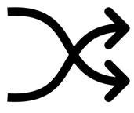

Prev - #37 Change Maker | Table of Contents | Next - #39 Collatz Sequence
shuffle([1, 2, 3, 4, 5]) → [3, 1, 4, 5, 2]

A random shuffle algorithm puts the values in a list into a random order, like shuffling a deck of cards. This algorithm produces a new permutation, or ordering, of the values in the list. The algorithm works by looping over each value in the list and randomly determining a new index with which to swap it. As a result, the values in the list are in random order.
For a list of n values, there are n! (“n factorial”) possible permutations. For example, a 10-value list has 10! or 10 × 9 × 8 × 7 × 6 × 5 × 4 × 3 × 2 × 1 or 3,628,800 possible ways to order them.
This exercise modifies the list passed to it in-place, rather than creating a new list and returning it. Because lists are mutable objects in Python, modifications made to a parameter are actually modifying the original object passed to the function call for that parameter. For example, enter the following into the interactive shell:
>>> someList = [1, 2, 3] # Let's create a list object.
>>> def someFunc(someParam):
... someParam[0] = 'dog' # This is changing the list in-place.
... someParam.append('xyz') # This is changing the list in-place.
...
>>> someList
[1, 2, 3]
>>> someFunc(someList) # Pass the list as the argument.
>>> someList # Note that the list object has been modified by the function.
['dog', 2, 3, 'xyz']
Notice that the someList list is
passed as the argument for the someParam parameter
of the someFunc() function. This function modifies someParam (which refers to the same list object that the someList variable refers to), so these modifications are
still there after the function returns. The someFunc()
function isn’t returning a new list to replace someList;
it’s modifying someList in-place.
In Python, only mutable objects (such as lists, dictionaries, and sets) can be modified in-place. Immutable objects (such a strings, integers, tuples, and frozen sets) can’t be modified in-place.
Exercise Description
Write a shuffle() function with a values parameter set to a list of values. The function
doesn’t return anything, but rather it sets each value in the list to a random
index. The resulting shuffled list must contain the same values as before but
in random order.
This exercise asks you to implement a function identical to
Python’s random.shuffle() function. As such, avoid
using this function in your solution as it’d defeat the purpose of the
exercise.
These Python assert statements stop
the program if their condition is False. Copy them
to the bottom of your solution program. Your solution is correct if the following
assert statements’ conditions are all True:
random.seed(42)
# Perform this test ten times:
for i in range(10):
testData1 = [1, 2, 3, 4, 5, 6, 7, 8, 9, 10]
shuffle(testData1)
# Make sure the number of values hasn't changed:
assert len(testData1) == 10
# Make sure the order has changed:
assert testData1 != [1, 2, 3, 4, 5, 6, 7, 8, 9, 10]
# Make sure that when re-sorted, all the original values are there:
assert sorted(testData1) == [1, 2, 3, 4, 5, 6, 7, 8, 9, 10]
# Make sure an empty list shuffled remains empty:
testData2 = []
shuffle(testData2)
assert testData2 == []
Try to write a solution based on the information in this description. If you still have trouble solving this exercise, read the Solution Design and Special Cases and Gotchas sections for additional hints.
Prerequisite concepts: import
statements, random module, randint(),
for loops, range(), len(), swapping values
Solution Design
The solution is surprisingly straightforward. A for loop can loop over every index in the list. On each iteration, the code in the loop selects a random index. Then it swaps the values at the current iteration’s index and the random index.
If the random index is the same as the current iteration’s index, this is fine: a random shuffling can include values at their original location. This isn’t somehow “less random” than any other permutation. If the random index is a repeat of an index that has previously been swapped, this is fine as well. Shuffling a value to a random location twice isn’t any more or less shuffled than moving a value to a random location once.
Special Cases and Gotchas
Take care that your shuffle() function
doesn’t add or remove any values to the list; it should only rearrange the
values already in the list. Because the shuffle()
function modifies the values list argument in-place, it doesn’t need to return
anything. There shouldn’t be a return statement
anywhere in the function. In Python, all functions technically return a value;
it’s just that functions with no return statement
return the value None.
When selecting a random index, select only an index within the
range of the list’s indexes. This means you should select an index from 0 up to, but not including, the length of the list. When
calling random.randint() to generate this random
index, you’ll want to use 0 and len(values)
- 1 to represent this range, and not 0 and len(values).
Now try to write a solution based on the information in the previous sections. If you still have trouble solving this exercise, read the Solution Template section for additional hints.
Solution Template
Try to first write a solution from scratch. But if you have difficulty, you can use the following partial program as a starting place. Copy the following code from https://invpy.com/randomshuffle-template.py and paste it into your code editor. Replace the underscores with code to make a working program:
# Import the random module for its randint() function.
import random
def shuffle(values):
# Loop over the range of indexes from 0 up to the length of the list:
for i in range(____(values)):
# Randomly pick an index to swap with:
swapIndex = random.randint(0, len(____) - ____)
# Swap the values between the two indexes:
values[i], values[swapIndex] = values[____], values[____]
The complete solution for this exercise is given in Appendix A and https://invpy.com/randomshuffle.py. You can view each step of this program as it runs under a debugger at https://invpy.com/randomshuffle-debug/.
Prev - #37 Change Maker | Table of Contents | Next - #39 Collatz Sequence